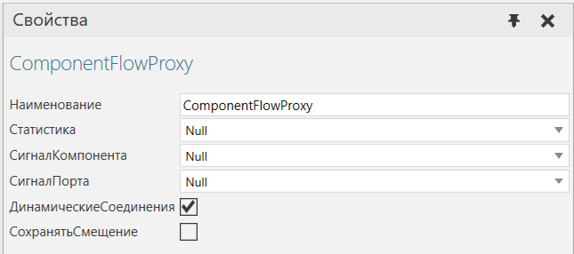
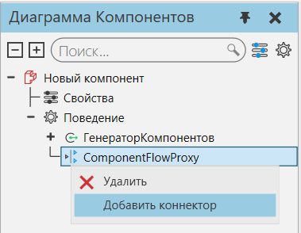
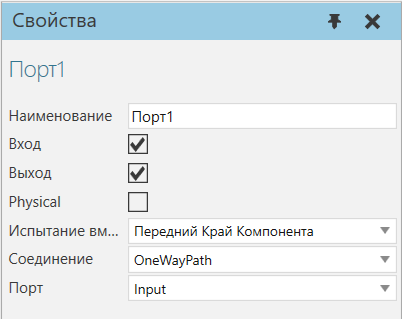

|
Прокси-процесс потока компонентов позволяет вам управлять потоком компонентов в различных режимах, используя любое количество портов.

Порты прокси-процесса потока компонентов добавляются и удаляются с помощью меню и перечислены вместе с поведением на панели Диаграммы Компонентов.

Каждый порт прокси-процесса потока компонентов имеет скрытый внутренний порт, который следует использовать для подключения прокси-процесса к поведениям в том же компоненте.

Входной порт одностороннего пути, подключенный к внутреннему порту прокси-процесса потока компонентов
Свойства
Название
|
Описание
|
Наименование
|
Определяет наименование прокси.
|
Статистика
|
Определяет поведение статистики, когда собирает статистику, сгенерированную прокси.
|
СигналКомпонента
|
Определяет сигнал компонента, используемый для обозначения того, какой компонент пытается войти в прокси.
|
СигналПорта
|
Определяет целочисленный сигнал, используемый для обозначения порта, через который компонент пытается войти в прокси.
|
ДинамическиеСоединения
|
Включает/выключает использование соединителей, определенных скриптом Python. То есть во время моделирования сценарий Python может подключать порты прокси-сервера к соединителям в других режимах на основе определенной логики, например поворотный стол, который должен направлять компоненты по разным путям.
Значение True означает, что прокси будет динамически формировать соединения во время моделирования, что в большинстве случаев требует использования скрипта Python. Значение False означает, что прокси-сервер будет передавать компоненты через соединение своих внутренних и внешних портов. Например, если внутренний порт прокси-сервера получает компонент, компонент будет передан с внутреннего порта на сопряженный с ним внешний порт, а затем в другое место, если внешний порт (коннектор, добавленный к прокси-серверу) подключен к точке передачи, например входной порт пути.
|
СохранитьCмещение
|
Включает/выключает возможность сохранять положение компонента при его прохождении по маршруту.
|
|